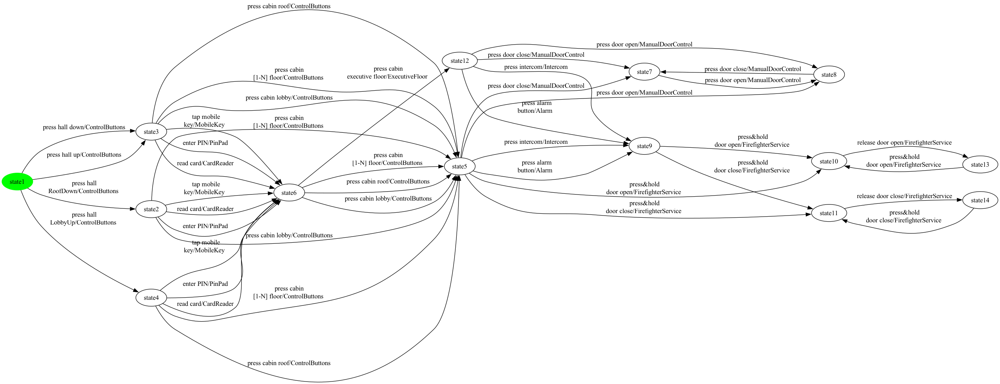
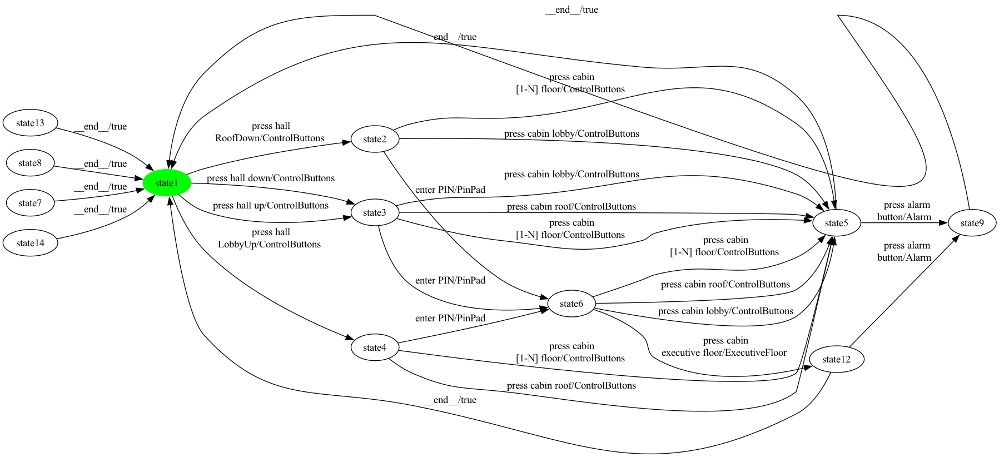

Stepwise rendering of the M2 SCC repair pipeline on one hand-picked product of Elevator. Each step shows the FTS as a PNG and a one-paragraph summary of what changed. Synthetic balancing edges (introduced later by EulerianBalancer in M3) are not present here.
Chosen configuration: selected = {Alarm, ControlButtons, ExecutiveFloor, PinPad}
Size: 14 states, 49 transitions
This is the bisimulation-minimized FTS produced by MxeToFtsConverter from the MXE ESG-Fx model. Every transition still carries its feature expression for traceability. The same FTS is the input for every product.

Size: 12 states, 27 transitions
FExpressionPreservingProjection keeps only transitions whose feature expression evaluates to true under the chosen configuration. 22 transition(s) were dropped relative to step 1. After projection the graph has 5 strongly-connected component(s); the SCC containing the initial state has 8 state(s). If that count is less than the total state count, the next step removes the unreachable / non-returnable portions.

Size: 8 states, 23 transitions
InitialSccFilter keeps only the SCC containing the initial state and drops every other state along with the transitions touching them. 4 state(s) and 4 transition(s) were removed. The result is strongly connected by construction and feeds the EulerianBalancer + Hierholzer pipeline in M3 and the coverage generators in M4 / M5 / M6.